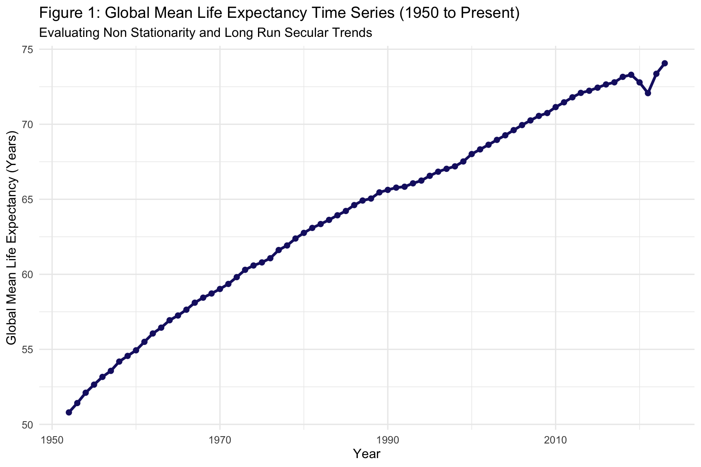
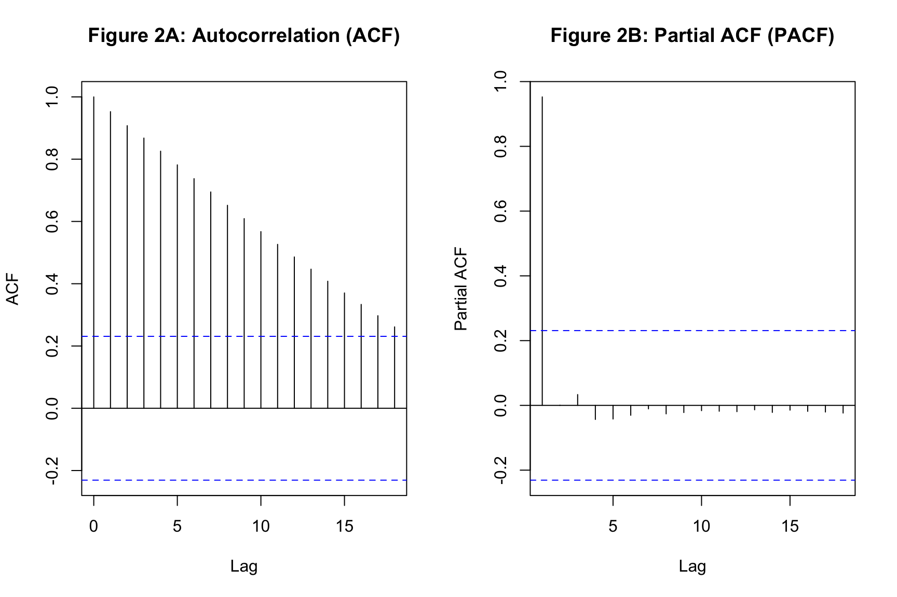
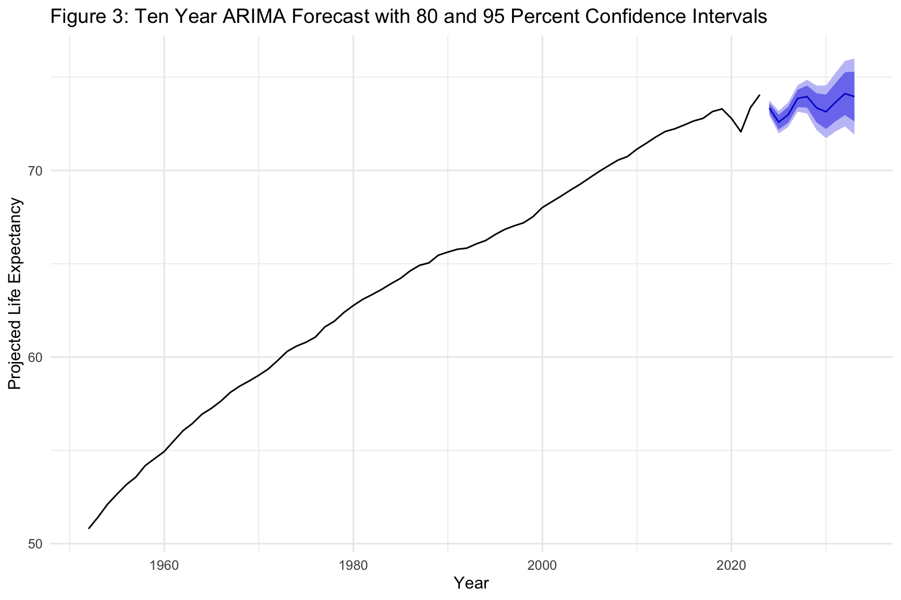

Stationarity Diagnostics, Autoregressive Models and ARIMA Forecasting
Author
Neena Abimbola Albarus
1. Theoretical Foundations and Methodological Overview
Time series analysis studies a single unit observed repeatedly across time, where the ordering of observations carries information. This is fundamentally different from cross sectional analysis, where the order of rows is arbitrary. In a time series, the value of the outcome today depends on its value yesterday, and the errors are usually correlated across time. Standard OLS assumptions such as independent and identically distributed errors break down immediately.
The central concept in time series analysis is stationarity. A stationary series has a constant mean, constant variance, and an autocovariance structure that depends only on the distance between observations, not on the calendar time itself. Non stationary series, meaning those with trends or changing variance, produce spurious regressions when analyzed with ordinary least squares. A regression of one trending series on another trending series will almost always produce a large t statistic and a high R squared even when the two series are completely unrelated.
Two workhorses dominate applied time series work. The autoregressive distributed lag model captures the dependence of the outcome on its own past values through lagged regressors. The ARIMA model extends this logic to include moving average terms and integrated differencing, providing a flexible framework for both description and forecasting. We apply both to the global mean life expectancy series from 1950 to the present.
⚠️ Common Pitfalls
Regressing trending series on each other without testing for stationarity. This is the classic spurious regression trap. Always run an ADF test before fitting any time series regression.
Reading high R squared as evidence of a good model. With trending data, R squared near 1 is nearly automatic. It tells you almost nothing about whether the relationship is real.
Confusing correlation with predictability. Autocorrelation tells you a series is persistent, not that it can be forecast. Forecast performance depends on the underlying data generating process and the length of the horizon.
2. Data Pipeline and Time Series Construction
Before estimating anything, we need to locate the OWID data, aggregate it to a single global mean per year, and construct the lagged variables that the autoregressive model will use. We also separate the plain numeric data frame, used for regression, from the ts object, used for ACF, PACF, and forecasting functions.
# Dynamic path resolution across common working directoriespossible_paths <-c("../data/life_expectancy_data.csv","data/life_expectancy_data.csv","../../data/life_expectancy_data.csv","/Users/yawdgyal/Desktop/R for github/data/life_expectancy_data.csv","/Users/yawdgyal/Desktop/R for github/workbooks/data/life_expectancy_data.csv")data_path <- possible_paths[file.exists(possible_paths)][1]if (is.na(data_path) ||length(data_path) ==0) {stop("Could not locate 'life_expectancy_data.csv'. ","Searched the following paths:\n",paste(possible_paths, collapse ="\n") )}message("Loading data from: ", data_path)owid_raw <-read_csv(data_path, show_col_types =FALSE)if ("Entity"%in%names(owid_raw)) { owid_df <- owid_raw %>%rename(country = Entity,code = Code,year = Year,life_exp =`Life expectancy` )} else { owid_df <- owid_raw %>%rename_with(tolower)}# Aggregate to a single global mean per yearts_df <- owid_df %>%filter(!is.na(life_exp), year >=1950) %>%group_by(year) %>%summarise(mean_life_exp =mean(life_exp, na.rm =TRUE),.groups ="drop" ) %>%arrange(year) %>%mutate(mean_life_exp =as.numeric(mean_life_exp),diff_life_exp = mean_life_exp -lag(mean_life_exp, 1),lag1_life_exp =lag(mean_life_exp, 1),lag2_life_exp =lag(mean_life_exp, 2) ) %>%drop_na()# Separate ts object for ACF, PACF, and forecastinglife_exp_ts <-ts( ts_df$mean_life_exp,start =min(ts_df$year),frequency =1)glimpse(ts_df)
What is happening here: The possible_paths vector lets the workbook run from multiple working directories. We read the OWID CSV, defensively rename its columns, and filter to 1950 and later. The group_by(year) and summarise(mean(life_exp)) collapse the panel into a single global mean per year. We then create a first difference column and two lagged columns using dplyr::lag(). Finally, we build a separate ts object so that the forecast package functions can take advantage of the time series class and its built in frequency and start date attributes.
⚠️ Common Pitfalls
Forgetting that ts() requires regularly spaced observations. If a year is missing from your aggregated data, the ts object will treat the years as contiguous and silently misalign the time index.
Building lags from an unordered data frame.lag() is positional. If the data is not sorted by year, you will build lags from the wrong periods. The arrange(year) call is essential.
Aggregating unweighted country means. The global mean here treats every country as equally important, which is a modeling choice. Population weighted means will tell a different story in some periods.
3. Stationarity Diagnostics and Model Estimation
Before fitting any regression, we need to determine whether the series is stationary. The Augmented Dickey Fuller test is the standard tool. A small p value is evidence against the null hypothesis of a unit root, meaning the series is stationary. We test both the level series and its first difference.
# Augmented Dickey Fuller tests on levels and differencesprint(adf.test(life_exp_ts))
Augmented Dickey-Fuller Test
data: life_exp_ts
Dickey-Fuller = -0.78259, Lag order = 4, p-value = 0.9587
alternative hypothesis: stationary
print(adf.test(diff(life_exp_ts)))
Augmented Dickey-Fuller Test
data: diff(life_exp_ts)
Dickey-Fuller = -2.7046, Lag order = 4, p-value = 0.2886
alternative hypothesis: stationary
# Fit autoregressive distributed lag model on numeric data framemod_ardl_lm <-lm( mean_life_exp ~ lag1_life_exp + lag2_life_exp,data = ts_df)modelsummary(list("Autoregressive Lag Model"= mod_ardl_lm),stars =TRUE,gof_omit ="IC|Log|F")
Autoregressive Lag Model
+ p < 0.1, * p < 0.05, ** p < 0.01, *** p < 0.001
(Intercept)
1.161***
(0.304)
lag1_life_exp
1.100***
(0.124)
lag2_life_exp
-0.114
(0.122)
Num.Obs.
72
R2
0.999
R2 Adj.
0.999
RMSE
0.22
What is happening here: The adf.test() function runs the Augmented Dickey Fuller test. If the p value on the level series is large, we cannot reject the null hypothesis of a unit root, meaning the series is non stationary. If the p value on the first difference is small, that is evidence the series becomes stationary after differencing, which is the standard I(1) pattern. The lm() call then fits an autoregressive model with two lags, using the plain data frame rather than the ts object. The modelsummary() output shows the coefficients, standard errors, and significance stars for the lagged terms.
⚠️ Common Pitfalls
Trusting the ADF test blindly. The ADF has low power in short samples and can fail to reject even when the series is stationary. Use it alongside visual inspection of the series and its correlogram.
Differencing a series that was already stationary. Over differencing introduces artificial negative autocorrelation and makes the residuals harder to model. Only difference when the tests and plots support it.
Interpreting AR coefficients as causal effects. The lagged coefficient tells you how past values predict future values, not how a policy that shifts the series would propagate. Those are different questions.
4. Diagnostic Visualizations
The three figures below move from the raw time series plot to the autocorrelation structure to the ARIMA forecast. Together they tell the story of the series trend, its persistence, and its projected future path.
Figure 1: Global Mean Life Expectancy Time Series
fig1 <-ggplot(ts_df, aes(x = year, y = mean_life_exp)) +geom_line(color ="midnightblue", linewidth =1.2) +geom_point(color ="midnightblue", size =2) +theme_minimal(base_size =12) +labs(title ="Figure 1: Global Mean Life Expectancy Time Series (1950 to Present)",subtitle ="Evaluating Non Stationarity and Long Run Secular Trends",x ="Year",y ="Global Mean Life Expectancy (Years)" )print(fig1)

How to read this figure: Each point is the average life expectancy across all countries in that year. The line traces the trajectory of that average across the decades. A strong upward slope is the visual signature of a non stationary series with a deterministic trend. Any temporary dip, such as during the 2020 pandemic, appears as a downward notch on the line.
🔑 Key Takeaway: A series that trends steadily upward is the canonical example of non stationarity. Regressing such a series on another trending series will produce a spurious relationship more often than not. The visual evidence here justifies running the ADF test and considering differencing before any regression.
Figure 2: Autocorrelation and Partial Autocorrelation Functions
par(mfrow =c(1, 2))acf(life_exp_ts, main ="Figure 2A: Autocorrelation (ACF)")pacf(life_exp_ts, main ="Figure 2B: Partial ACF (PACF)")

par(mfrow =c(1, 1))
How to read this figure: The ACF plot shows the correlation between the series and its own lagged values at different lags. A slowly decaying ACF is the signature of a non stationary series. The PACF plot shows the correlation with each lag after partialling out the effects of intermediate lags. Together they help identify the appropriate AR and MA orders for an ARIMA model.
🔑 Key Takeaway: An ACF that stays near 1 for many lags is strong evidence that the series needs to be differenced before it can be modeled. A PACF that cuts off after one or two lags suggests the appropriate AR order. Reading these two plots together is the standard way to identify ARIMA orders by eye before letting auto.arima() do it algorithmically.
Figure 3: Ten Year ARIMA Forecast
fit_arima <-auto.arima(life_exp_ts)fcast <-forecast(fit_arima, h =10)fig3 <-autoplot(fcast) +theme_minimal(base_size =12) +labs(title ="Figure 3: Ten Year ARIMA Forecast with 80 and 95 Percent Confidence Intervals",x ="Year",y ="Projected Life Expectancy" )print(fig3)

How to read this figure: The solid line is the historical series. The blue line to the right of the historical window is the point forecast. The darker shaded band is the 80 percent confidence interval and the lighter band is the 95 percent interval. Because ARIMA forecasts revert to the mean for stationary series, the width of the bands grows with the forecast horizon.
🔑 Key Takeaway: Forecast uncertainty always grows with the horizon. A ten year forecast is not the same as a one year forecast in terms of reliability. The confidence bands make that tradeoff visually explicit, which is why they should be shown alongside any point forecast in a report.
5. Putting It All Together
You now have a complete time series workflow. You have aggregated a multi country panel into a global yearly series, tested for stationarity with the Augmented Dickey Fuller test, estimated an autoregressive model with two lags, visualized the ACF and PACF to identify model orders, and produced a ten year ARIMA forecast with confidence bands.
The core decision rule is straightforward. Reach for autoregressive models with lagged regressors when you want to describe how a series depends on its own past and how those dependencies change over time. Reach for ARIMA models when you want to forecast and are willing to let the data determine the appropriate differencing, AR, and MA orders. Reach for structural time series models or VARs when you have multiple interacting series that you want to model jointly. Reach for intervention analysis or break point tests when you suspect a specific event changed the trajectory of the series.
The time series plot, the ACF and PACF pair, and the forecast plot with confidence bands are your primary reporting devices. Together they tell the reader what the series looks like, how persistent it is, and what the model expects it to do next. Time series analysis is one of the most deceptive areas of applied statistics because trending series can fool even experienced analysts. Taking the stationarity diagnostics seriously is what separates a credible analysis from a spurious one.